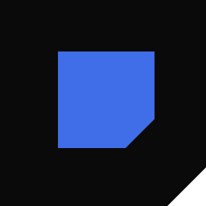
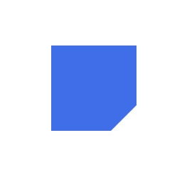
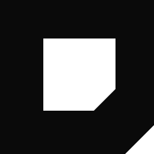

Раньше на тёмном и синем фонах мы использовали ту же марку — и она пропадала: на чёрном чёрный квадрат сливался с фоном, на синем инверсия выдавала абстрактную форму. Теперь три специальных версии под каждый контекст.
Правило: синий используется максимум один раз в логотипе. Если фон уже синий — внутренний квадрат становится белым. Если фон чёрный — инвертируем внешний квадрат.

AIVISION
AIVISION